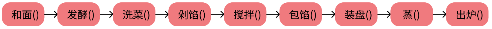
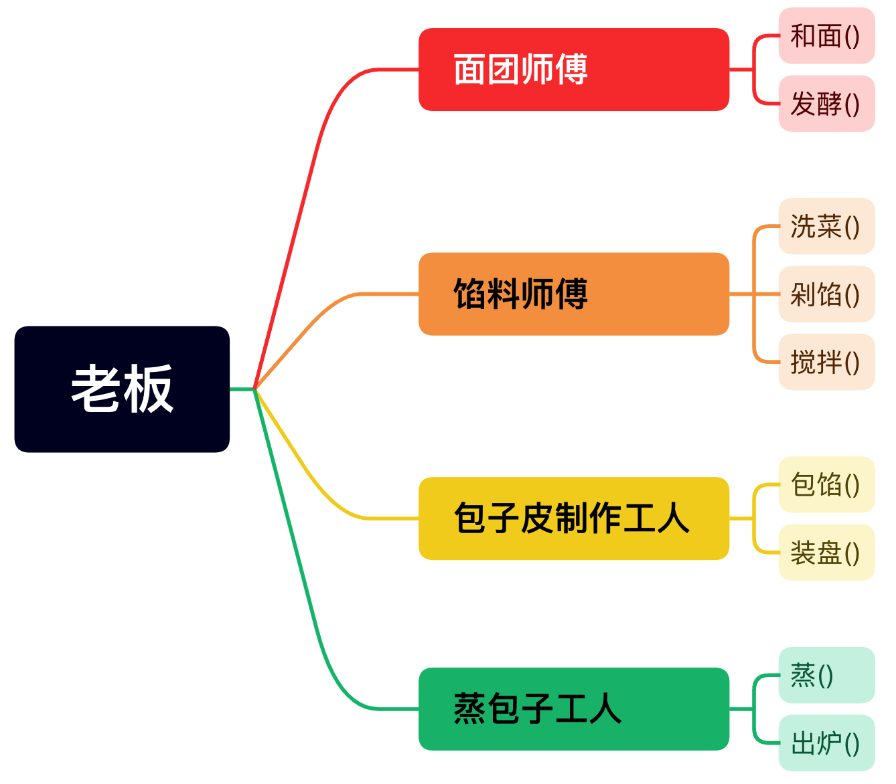

学习目标：
掌握变量的定义与使用
掌握标识符的命名规则
了解标识符的命名规范
介绍：变量可以用来存储数据，便于后续对数据进行操作。
定义语法：变量名=变量值
示例：
# 1.定义一个保存年龄的变量 age = 18
# 2.这里调用了一个名字叫做age的变量print(age) 注意：同一个变量名如果被重复定义，那么新的值会覆盖掉旧的值
介绍：在Python中所有的名字必须遵守标识符的命名规则。
标识符命名规则：
只能由数字、字母、_（下划线）组成
不能以数字开头
不能是内置关键字
严格区分大小写
示例：
#1、只能由数字、字母、_（下划线）组成a`1 = 123 # 报错a.e = "sjdf" # 报错
#2、不能以数字开头1a = "123" # 报错
#3、不能是内置关键字False = 123 # 报错
#4、严格区分大小写Name = "托尼"print（name # 报错介绍：命名的一种规范、风格。
命令规范：
见名知意
使用一种命名风格：
下划线分割法
大驼峰命名法
小驼峰命名法
示例：
# 1. 下划线分割法student_name = "老王"user_name = "张三"
# 2. 大驼峰命名法StudentName = "老王"UserName = "张三"
# 3. 小驼峰命名法studentName = "老王"userName = "张三"介绍：Python为数据进行的分类，不同的数据类型所对应的操作方式会不一样。
学习目标：
掌握各个数据类型的定义
熟练各个数据类型的常用操作
使用
type()函数可以查看数据的类型
整型 int：
定义：整数
使用场景：用于记录年龄、个数等等
浮点型 float：
定义：小数
使用场景： 用于记录余额、身高等等
布尔类型 bool：
定义：True 或 False
使用场景：用于比较、判断
复数 complex： 了解即可
定义：复数公式
使用场景：用于科学计算、数学研究
特点：可以保存多个不同的数据类型
定义：在[]中用逗号分隔每个数据
使用场景：用于保存一组相关的数据，如：学生成绩列表、商品价格列表
示例：
ls = [1, 2.3, 'aa']1. 索引取值
根据元素对应的下标取值
示例：
ls = [1, 2.3, 'aa']# 0 1 2print(ls[0])print(ls[1])
2. 切片
语法：sequence[start:stop:step]
参数：
start 表示切片的起始位置，默认为 0（即序列的第一个元素）。如果省略 start，则表示从序列的开头开始切片。
stop 表示切片的结束位置（不包含该位置的元素）。如果省略 stop，则表示切片直到序列的末尾。
step 表示切片的步长，默认为 1。可以通过设置负数来实现反向切片。
3. append( )
作用：从列表末尾追加数据
语法：list_name.append(element)
参数：
list_name 是要进行操作的列表名称
element 是要添加到列表末尾的元素
4. insert( )
作用：向指定位置插入数据
语法：list_name.insert(index, element)
参数：
list_name 是要进行操作的列表名称
index 是要插入元素的位置索引
element 是要插入的元素
5. del
作用：del 是一个通用的 Python 语句，用于删除指定元素或删除变量
示例：
list1 = [1, 2, 3]del list1[1] # 将1号索引上的元素删除
6. remove( )
作用：从列表末尾追加数据
语法：list_name.remove(element)
参数：
list_name 是要进行操作的列表名称
element 是要删除的元素
7. index( )
作用：返回指定元素在列表中第一次出现的索引位置
语法：list_name.index(element)
参数：
list_name 是要进行操作的列表名称
element 是要查找的元素
8. count( )
作用：用于统计列表中指定元素的出现次数
语法：list_name.count(element)
参数：
list_name 是要进行操作的列表名称
element 是要统计出现次数的元素
9. sort( )
作用：用于对列表中的元素进行排序
语法：list_name.sort()
参数：
list_name 是要进行操作的列表名称
注意：默认情况下，sort() 方法会按照升序进行排序。如果希望按照降序进行排序，可以使用 reverse=True 参数
示例：
numbers = [5, 2, 9, 1, 7]print(numbers) # 输出：[5, 2, 9, 1, 7]
numbers.sort(reverse=True)print(numbers) # 输出：[9, 7, 5, 2, 1]
10. len( )
作用：返回可迭代对象的长度
语法：len(iteration)
参数：
iteration表示可迭代对象
定义：使用' '、" "、''' '''、""" """包裹
使用场景：记录描述性质的状态，名字、一段话等等。
示例：
info1 = '孙悟空'info2 = "孙悟空"info3 = '''孙悟空'''info4 = """孙悟空"""1. 索引取值
根据元素对应的下标取值
示例：
st = 'abc'# 012print(st[0])print(st[1])
2. 切片
语法：sequence[start:stop:step]
参数：
start 表示切片的起始位置，默认为 0（即序列的第一个元素）。如果省略 start，则表示从序列的开头开始切片。
stop 表示切片的结束位置（不包含该位置的元素）。如果省略 stop，则表示切片直到序列的末尾。
step 表示切片的步长，默认为 1。可以通过设置负数来实现反向切片。
3. len( )
作用：返回可迭代对象的长度
语法：len(iteration)
参数：
iteration表示可迭代对象
4. split( )
作用：将字符串分割成子字符串，并返回一个包含分割结果的列表
语法：string.split(separator, maxsplit)
参数：
string 是要进行分割的字符串
separator 是分割符（默认为空白字符）
maxsplit 是可选参数，用于指定最大分割次数
示例：
xxxxxxxxxxstring = "apple,banana,orange,grape"fruits = string.split(',', 2)print(fruits) # 输出：['apple', 'banana', 'orange,grape']
5. join( )
作用：用于将一个可迭代对象的元素连接成一个字符串
语法：separator.join(iterable)
参数：
separator 是连接各个元素时使用的分隔符
iterable 是一个可迭代对象，包含要连接的元素
6. lower( )
作用：用于将字符串中的字母字符转换为小写形式
语法：string.lower()
参数：
string 是要进行转换的字符串
7. upper( )
作用：用于将字符串中的字母字符转换为大写形式
语法：string.upper()
参数：
string 是要进行转换的字符串
8. find( )
作用：用于在字符串中查找指定子字符串，并返回它的第一次出现的索引位置。如果找不到该子字符串，则返回 -1
语法：string.find(substring, start, end)
参数：
string 是要进行查找的字符串；
substring 是要查找的子字符串；
start 是可选参数，表示查找的起始位置，默认为 0；
end 是可选参数，表示查找的结束位置，默认为字符串的长度。
8. find( )
作用：用于在字符串中查找指定子字符串，并返回它的第一次出现的索引位置。如果找不到该子字符串，则返回 -1
语法：string.find(substring, start, end)
参数：
string 是要进行查找的字符串；
substring 是要查找的子字符串；
start 是可选参数，表示查找的起始位置，默认为 0；
end 是可选参数，表示查找的结束位置，默认为字符串的长度。
9. replace( )
作用：用于将指定的子字符串替换为新的字符串
语法：string.replace(old, new, count)
参数：
string 是要进行替换的原始字符串；
old 是要被替换的子字符串；
new 是用来替换的新字符串；
count 是可选参数，表示最多替换的次数。如果不指定该参数，则会替换所有出现的子字符串。
10. count( )
作用：用于统计字符串中指定元素的出现次数
语法：string.count(element)
参数：
string 是要进行操作的列表名称
element 是要统计出现次数的元素
百分号格式化
使用 % 符号进行字符串格式化，通过占位符 %s、%d、%f 等来表示要填入的变量。下面是一个示例：
xxxxxxxxxxname = "Alice"age = 25print("My name is %s and I am %d years old." % (name, age))输出结果为："My name is Alice and I am 25 years old."
在上述示例中，使用 %s 表示字符串的占位符，%d 表示整数的占位符。占位符可以根据需要指定不同的类型。
format 方法
使用 .format() 方法将要插入的变量作为参数传递给字符串，并使用 {} 占位符来表示要插入的位置。下面是一个示例：
name = "Alice"age = 25print("My name is {} and I am {} years old.".format(name, age))输出结果为："My name is Alice and I am 25 years old."
在上述示例中，通过在字符串中使用 {} 来表示占位符，在 .format() 方法中按顺序传递要插入的变量。
f格式化
使用以 f 或 F 开头的字符串，在其中使用 {} 占位符来表示要插入的变量。下面是一个示例：
name = "Alice"age = 25print(f"My name is {name} and I am {age} years old.")输出结果为："My name is Alice and I am 25 years old."
在上述示例中，通过在字符串前加上 f 前缀，可以直接在 {} 内部插入变量，并且可以在 {} 内使用表达式。
特点：一旦定义了之后就不可改变
定义：在()中用逗号分隔每个数据
使用场景：用于保存重要数据，不能被修改的数据
示例：
xxxxxxxxxxtp = (1, 1.2, True, 'hello')1. len( )
作用：返回可迭代对象的长度
语法：len(iteration)
参数：
iteration表示可迭代对象
2. count( )
作用：用于统计元组中指定元素的出现次数
语法：tuple_name.count(element)
参数：
tuple_name 是要进行操作的元组名称
element 是要统计出现次数的元素
3. index( )
作用：返回指定元素在元组中第一次出现的索引位置
语法：tuple_name.index(element)
参数：
tuple_name 是要进行操作的元组名称
element 是要查找的元素
4. 索引取值
根据元素对应的下标取值
示例：
xxxxxxxxxxtuple_ = (1, 2.3, 'aa')# 0 1 2print(tuple_[0])print(tuple_[1])
5. 切片
语法：sequence[start:stop:step]
参数：
start 表示切片的起始位置，默认为 0（即序列的第一个元素）。如果省略 start，则表示从序列的开头开始切片。
stop 表示切片的结束位置（不包含该位置的元素）。如果省略 stop，则表示切片直到序列的末尾。
step 表示切片的步长，默认为 1。可以通过设置负数来实现反向切片。
介绍：在Python中，数据类型可以分为可变类型（mutable）和不可变类型（immutable）。可变类型是指对象在创建后可以被修改，而不可变类型则是指对象在创建后不能被修改。
可变类型：
列表（List）
字典（Dictionary）
集合（Set）
不可变类型：
数字（Number）
字符串（String）
元组（Tuple）
可变类型和不可变类型的区别主要在于它们的赋值和修改操作。对于可变类型，当一个对象被赋值给一个新的变量时，两个变量实际上引用的是同一个对象，对其中一个变量的修改会影响到另一个变量。而对于不可变类型，当进行修改操作时，实际上会创建一个全新的对象。
介绍：字典（Dictionary）是Python中的一种数据结构，用于存储键值对（key-value）的无序集合。
特点：
无序性：字典中的键值对没有固定的顺序，不像列表和元组那样有索引来访问元素。
唯一键：字典中的键必须是唯一的，不能重复。如果多次使用相同的键，后面的键值对会覆盖前面的。
定义：
字典使用大括号{}来定义，每个元素以键值对的形式存在
key(键)：必须是不可变类型，如字符串，数值类型或元组。一般使用字符串
value(值)：可以取任何数据类型
使用场景：
缓存数据：字典可以用来缓存计算结果或其他需要频繁访问的数据，提高程序的执行效率。
数据处理与分析：在数据分析和处理过程中，字典常用于存储和处理不同类别的数据，如用户信息、商品信息等。
示例：
xxxxxxxxxxdt = {'name': '孙悟空', 'age': 18, 'height': 180}1. 增
介绍：对字典中不存在的键进行赋值
示例：
xxxxxxxxxxdt = {'name': '孙悟空', 'age': 18, 'height': 180}dt['sex'] = '男'print(dt)
# 运行结果：{'name': '孙悟空', 'age': 18, 'height': 180, 'sex': '男'}
2. 删
介绍：使用del删除字典中的键
示例：
xxxxxxxxxxdt = {'name': '孙悟空', 'age': 18, 'height': 180}del dt['name']print(dt)
# 运行结果： {'age': 18, 'height': 180}
3. 改
介绍：通过键取到值后进行赋值操作
示例：
xxxxxxxxxxdt = {'name': '孙悟空', 'age': 18, 'height': 180}dt['name'] = '唐僧'print(dt)
# 运行结果： {'name': '唐僧', 'age': 18, 'height': 180}
4. 查
介绍：通过键取值，键不存在将会报错
示例：
xxxxxxxxxxdt = {'name': '孙悟空', 'age': 18, 'height': 180}print(dt['name']) # 孙悟空print(dt['aaaa']) # 报错，没有这个键名
5. len( )
作用：返回可迭代对象的长度
语法：len(iteration)
参数：
iteration表示可迭代对象
6. keys( )
作用：返回一个包含字典中所有键的可迭代对象
语法：dictionary.keys()
参数：
dictionary：字典对象，即要获取键的字典。
7. values( )
作用：返回包含字典所有值的可迭代对象
语法：dictionary.values()
参数：
dictionary：字典对象，即要获取值的字典。
8. items( )
作用：返回包含字典所有值的可迭代对象
语法：dictionary.items()
参数：
dictionary：字典对象，即要获取键值对的字典
特点：
唯一性：集合中的元素是唯一的，不会重复出现
无序性：集合中的元素没有固定的顺序，即不支持索引访问
可变性：集合是可变的，可以根据需要进行添加、删除和修改操作。
定义：
使用{}保存，集合中只能保存不可变类型
使用场景：
去重：由于集合中的元素是唯一的，可以方便地通过集合来去除列表、元组等可迭代对象中的重复元素。
集合运算：集合支持并集、交集、差集等基本集合运算。可以方便地对两个集合进行操作，从而得到需要的结果。
1. add( )
作用：用于向集合中添加元素
语法：set.add(element)
参数：
set：集合对象，即要进行添加操作的集合。
element：要添加到集合中的元素。
2. remove( )
作用：用于从集合中移除指定的元素
语法：set.remove(element)
参数：
set：集合对象，即要进行移除操作的集合。
element：要从集合中移除的元素。
3. len( )
作用：返回可迭代对象的长度
语法：len(iteration)
参数：
iteration表示可迭代对象
4. 并集
作用：用于获取两个集合中共同存在的元素，并返回一个新的集合
语法：set1 & set2
示例：
set1 = {1, 2, 3, 4}set2 = {3, 4, 5, 6}
intersection = set1 & set2
print(intersection) # 输出 {3, 4}
5. 交集
作用：用于将两个集合合并成一个包含两个集合中所有元素的新集合
语法：set1 | set2
示例：
set1 = {1, 2, 3, 4}set2 = {3, 4, 5, 6}
union = set1 | set2
print(union) # 输出 {1, 2, 3, 4, 5, 6}
6. 差集
作用：用于从第一个集合中去除与第二个集合共同存在的元素，并返回一个新的集合
语法：set1 - set2
示例：
xxxxxxxxxxset1 = {1, 2, 3, 4}set2 = {3, 4, 5, 6}
difference = set1 - set2
print(difference) # 输出 {1, 2}
7. 对称差集
作用：用于获取两个集合中互相独立存在的元素的合集，并返回一个新的集合
语法：set1 ^ set2
示例：
xxxxxxxxxxset1 = {1, 2, 3}set2 = {3, 4, 5}
symmetric_difference = set1 ^ set2
print(symmetric_difference) # 输出 {1, 2, 4, 5}介绍：类型转换指的是将一个数据类型的值转换为另一个数据类型的过程，在某些场景下需要使用这样的手段对数据进行处理。
学习目标：
掌握各个数据类型的转换
注意：字符串可以与数值类型进行互相转换
数值类型之间的转换：
int()：可转换float、boolean、str
float()：可转换int、boolean、str
str()：可转换任何数据类型
可迭代对象之间的转换：
list()：可以转换str、tuple、dict、set
tuple()：可以转换str、list、dict、set
set()：可以转换str、list、dict、tuple
dict()：转换条件需满足以下三点
转换成字典的数据类型必须是可迭代的
可迭代对象的每个元素应该是一个长度为2的序列，其中第一个元素作为键，第二个元素作为值
在转换成字典时，键必须是唯一的
str()：可转换任何数据类型
编码：
使用 encode() 方法将字符串编码为指定的字节数据，默认使用 UTF-8 编码。
xxxxxxxxxxstring = "Hello, World!"byte_data = string.encode() # 使用默认编码（UTF-8）进行编码print(byte_data) # 输出结果: b'Hello, World!'解码：
使用 decode() 方法将字节数据解码为字符串，默认使用 UTF-8 编码。
xxxxxxxxxxbyte_data = b'Hello, World!'string = byte_data.decode() # 使用默认编码（UTF-8）进行解码print(string) # 输出结果: Hello, World!学习目标：
掌握常见运算符的作用
算术运算符：
+ 加法：将两个操作数相加。
- 减法：从第一个操作数中减去第二个操作数。
* 乘法：将两个操作数相乘。
/ 除法：将第一个操作数除以第二个操作数，得到浮点数结果。
// 地板除法：将第一个操作数除以第二个操作数，得到整数结果（向下取整）。
% 取模/取余：返回第一个操作数除以第二个操作数的余数。
** 幂运算：将第一个操作数的值作为底数，第二个操作数作为指数进行幂运算。
比较运算符：
== 等于：检查两个操作数是否相等。
!= 不等于：检查两个操作数是否不等。
> 大于：检查第一个操作数是否大于第二个操作数。
< 小于：检查第一个操作数是否小于第二个操作数。
>= 大于等于：检查第一个操作数是否大于等于第二个操作数。
<= 小于等于：检查第一个操作数是否小于等于第二个操作数。
赋值运算符：
= 简单赋值：将右边的值赋给左边的变量。
+= 加法赋值：将右边的值加到左边的变量上，并将结果赋给左边的变量。
-= 减法赋值：从左边的变量中减去右边的值，并将结果赋给左边的变量。
*= 乘法赋值：将左边的变量乘以右边的值，并将结果赋给左边的变量。
/= 除法赋值：将左边的变量除以右边的值，并将结果赋给左边的变量。
//= 地板除法赋值：将左边的变量除以右边的值（向下取整），并将结果赋给左边的变量。
%= 取模赋值：将左边的变量对右边的值取模，将结果赋给左边的变量。
**= 幂赋值：将左边的变量的值作为底数，右边的值作为指数进行幂运算，并将结果赋给左边的变量。
逻辑运算符：
and 与运算：如果两个操作数都为 True，则结果为 True；否则结果为 False。
or 或运算：如果两个操作数中至少有一个为 True，则结果为 True；否则结果为 False。
not 非运算：对操作数取反，如果操作数为 True，则结果为 False；如果操作数为 False，则结果为 True。
位运算符：
& 按位与：对两个操作数的二进制表示按位进行与运算。
| 按位或：对两个操作数的二进制表示按位进行或运算。
^ 按位异或：对两个操作数的二进制表示按位进行异或运算。
~ 按位取反：对操作数的二进制表示按位进行取反运算。
<< 左移：将第一个操作数向左移动指定的位数。
>> 右移：将第一个操作数向右移动指定的位数。
成员运算符：
in 存在于：检查左边的操作数是否存在于右边的操作数中。
not in 不存在于：检查左边的操作数是否不存在于右边的操作数中。
身份运算符：
is 是相同对象：检查两个操作数是否引用同一个对象。
is not 不是相同对象：检查两个操作数是否不是引用同一个对象。
| 运算符 | 描述 |
|---|---|
() | 括号 |
** | 幂运算 |
~ | 按位取反 |
*、/、//、% | 乘法、除法、地板除法、取模 |
+、- | 加法、减法 |
<<、>> | 左移、右移 |
& | 按位与 |
^、| | 按位异或、按位或 |
>、>=、<、<=、==、!= | 比较运算符 |
not | 逻辑非 |
and | 逻辑与 |
or | 逻辑或 |
in、not in | 成员运算符 |
is、is not | 身份运算符 |
=、+=、-=、*=、/=、//=、%=、**= | 赋值运算符 |
介绍：在赋值可变数据类型时，赋值的其实是可变数据类型的内存地址，会导致在修改数据时出现问题。
浅拷贝：
使用可变数据类型身上的copy()函数
可以为第一层数据开辟新的空间，使其数据独立不共享
深拷贝：
使用copy模块中的deepcopy()函数
可以为所有的数据开辟新的空间，使所有数据独立不共享
示例：
xxxxxxxxxx# 浅拷贝ls1 = [1, 2, [4, 5, 6]]ls2 = ls1.copy()
# 深拷贝import copy as cp
ls1 = [1, 2, [4, 5, 6]]ls2 = cp.deepcopy(ls1)介绍：流程控制用于决定程序执行的顺序和方式，Python 提供了几种常见的流程控制语句，包括条件语句（if-else）、循环语句（for、while）、跳转语句（break、continue）等。
学习目标：
熟练运用条件控制和循环控制
if介绍：当 if 条件的结果为True时，执行对应的内部代码块，否则将不会执行if的内部代码
语法：
if 条件: 代码块示例：
sex = '男'if sex == '男': print('性别为男')elif介绍：当 if 条件不满足时，程序会继续检查下一个 elif 条件，直到找到满足条件的代码块或执行完所有条件
语法：
if 条件1: 代码块elif 条件2: 代码块elif ...示例：
sex = '女'if sex == '男': print('性别为男')elif sex == '女': print('性别为女')else介绍：条件都不满足的情况下才会被执行，必须跟if配合使用
语法：
if 条件1: 代码块elif 条件2: 代码块else: 代码块示例：
sex = input('请输入您的性别:')if sex == '男': print('性别为男')elif sex == '女': print('性别为女')else: print('信息有误！！')介绍：三目运算是对if-else的一种简洁形式
语法：value_true if condition else value_false
condition 是一个表达式，如果它的结果为 True，则返回 value_true，否则返回 value_false
示例：
age = 18status = "成年人" if age >= 18 else "未成年人"print(status) # 成年人while介绍：while 是一种循环语句，用于在满足特定条件时重复执行一段代码。这个特定条件被称为循环条件，它决定了循环是否继续执行。
语法：
while 条件: 代码块示例：
# 使用 while 循环来计算 1 到 5 的累加和:sum = 0count = 1
while count <= 5: sum += count count += 1
print("Sum:", sum) # Sum: 15for介绍：：for循环执行的时候，for循环中的临时变量会被可迭代对象中的每一个元素依次赋值，每次赋值之后都会去执行一次内部代码，直到可迭代对象中没有元素可以赋值，那么也意味着for结束
语法：
for 临时变量 in 可迭代对象： 内部代码块示例：
for i in 'abc': print(i) # 控制台输出：abc
range( )
介绍：函数可创建一个整数列表，一般用在 for 循环中
语法：range([start], stop[, step])
参数：
start（可选）：序列的起始值，默认为 0。
stop：序列的结束值，生成的整数序列不包含该值。
step（可选）：序列中每个相邻整数之间的差值，默认为 1。
示例：
xxxxxxxxxx# 1. 生成列表ls = range(1, 10)
# 转换成列表查看生成的内容print(list(ls)) # [1, 2, 3, 4, 5, 6, 7, 8, 9]
# 2. 在for循环中使用时不需要类型转换，直接使用即可for i in range(3): print(i) 控制台打印：012break介绍：break 是 Python 中的一个关键字，用于在循环语句中提前结束循环。
作用：当循环运行到break关键字时，会干掉自己所在的循环
示例：
# forfor i in range(3): print(i) break # 控制台打印：0
# whilewhile True: print('hello') break # 控制台打印：'hello'continue介绍：continue 是 Python 中的一个关键字，用于在循环语句中跳过当前迭代并进入下一次迭代
作用：当循环体代码运行到continue关键字时，直接跳到下一次循环的开始
示例：
# for for i in 'abc': if i == 'b': continue print(i)
# 控制台打印：ab
# whilei = 1while i <= 3: if i == 2: i += 1 continue print(i) i += 1
# 控制台打印：13else（了解）介绍：循环也可以使用else，但触发机制与判断不一样。
作用：如果循环是被break结束的，那么将不会执行else，反之才会执行else
介绍：列表推导式（List Comprehension）是一种简洁的语法，用于根据已有的列表生成新的列表。它提供了一种迅速创建、转换和过滤列表的方式。
语法：[expression for item in iterable if condition]
expression 是对每个 item 执行的表达式或操作
item 是迭代过程中的每个元素
iterable 是一个可迭代对象
condition 是一个可选的条件，表示元素需要满足的条件。
示例：
xxxxxxxxxx# 生成一个包含平方数的列表squares = [x**2 for x in range(1, 6)]print(squares) # 输出: [1, 4, 9, 16, 25]
# 过滤出长度大于等于3的字符串words = ["apple", "banana", "cherry", "orange"]filtered_words = [word for word in words if len(word) >= 3]print(filtered_words) # 输出: ['apple', 'banana', 'cherry', 'orange']介绍：函数是一个可重复使用的代码块，用于执行特定的任务或操作
学习目标：
掌握函数定义
掌握位置参数
掌握return的作用
定义语法：
def function_name(): # 函数体内部代码块调用语法：function_name()
function_name 是函数的名称
示例：
# 定义def a(): print('hello') print('world')
# 调用a()a()a()介绍：参数是函数定义中用于接收传入值的占位符。当调用函数时，我们可以向函数传递具体的值，定义阶段的参数叫作形参，调用阶段传入的值叫作实参
介绍：位置参数按照定义的顺序进行匹配，调用函数时必须按照参数位置的顺序传递相应的参数值
示例：
xxxxxxxxxxdef greet(name, message): print(f"{message}, {name}!")
greet("Alice", "Hello") # 输出: Hello, Alice!greet("Bob", "Hi") # 输出: Hi, Bob!介绍：关键字参数使用参数名和对应的值进行传递，不需要按照顺序，提高了代码的可读性
示例：
xxxxxxxxxxdef greet(name, message): print(f"{message}, {name}!")
greet(message="Hello", name="Alice") # 输出: Hello, Alice!greet(name="Bob", message="Hi") # 输出: Hi, Bob!介绍：默认参数在函数定义时指定了默认值，调用函数时如果没有提供相应参数的值，则使用默认值
示例：
xxxxxxxxxxdef greet(name, message="Hello"): print(f"{message}, {name}!")
greet("Alice") # 输出: Hello, Alice!greet("Bob", "Hi") # 输出: Hi, Bob!不定长位置参数
介绍：使用 *args 表示，可以接受任意数量的位置参数，参数以元组的形式传递给函数。
def sum_numbers(*args): total = sum(args) print(total)
sum_numbers(1, 2, 3) # 输出: 6sum_numbers(4, 5, 6, 7) # 输出: 22不定长关键字参数
介绍：使用 **kwargs 表示，可以接受任意数量的关键字参数，参数以字典的形式传递给函数。
def print_info(**kwargs): print(kwargs)
print_info(name="Alice", age=25, city="New York")
# 输出:# {'name': 'Alice', 'age': 25, 'city': 'New York'}return介绍：return 关键字用于指定函数的返回值。当函数执行到 return 语句时，函数将停止执行，并将返回值传递回调用函数的地方。函数可以有返回值，也可以没有返回值。如果函数没有显式地使用 return 返回值，那么函数将默认返回 None
示例：
def func(): np = 10 + 2 return np
np = func() # 用变量接收函数返回的值print(np) # 12return返回值的三种情况：
返回None：函数体内没有return、return、return None
返回一个值：return 值
返回多个值：return 值1，值2，...
介绍：定义在函数内部的变量拥有一个局部作用域，称之为局部变量，定义在函数外的拥有全局作用域，称之为全局变量
局部变量：只能在其函数内部访问
全局变量：可以在任何地方访问
函数内部查找机制：
首先，在函数内部查找变量。这些变量是在函数内部声明或传递给函数的参数。
如果在函数内部没有找到变量，解释器会继续查找包含当前函数的外部函数的作用域，直到找到为止。
如果在上述步骤中仍然没有找到变量，解释器会查找全局作用域中的变量。全局作用域是指在函数外部定义的变量。
最后，如果在前面的步骤中都没有找到变量，则查找内置的变量和函数名，如 print() 和 len() 等。
示例：
xxxxxxxxxxx = 10 # 全局变量
def foo(): y = 20 # 局部变量 print(x) # 在函数内部访问全局变量 print(y) # 在函数内部访问局部变量
foo() # 输出: 10 20print(x) # 输出: 10print(y) # 报错，y 在函数外部不可见lambda函数介绍：lambda函数也称为 匿名函数，用来创建一个简单的函数，而无需使用 def 关键字定义一个常规函数
语法：lambda arguments: expression
参数：
arguments 是函数的参数列表，可以包含零个或多个参数（多个参数使用逗号分隔）
expression 则是函数体中的表达式
示例：
# 求两个数的和add = lambda x, y: x + yresult = add(3, 4)print(result) # 输出: 7
# 求一个数的平方square = lambda x: x**2result = square(5)print(result) # 输出: 25介绍：高阶函数是指可以接受一个或多个函数作为参数，或者返回一个函数的函数
1. map( )
作用：将一个函数应用到迭代器的每个元素上，并返回一个包含结果的迭代器。
语法：map(function, iterable, ...)
参数：
function：要应用于每个元素的函数。
iterable：要处理的可迭代对象，如列表、元组等。
示例：
numbers = [1, 2, 3, 4, 5]squared = list(map(lambda x: x**2, numbers))print(squared) # 输出: [1, 4, 9, 16, 25]
2. filter( )
作用：根据函数的返回值筛选出符合条件的元素，并返回一个包含这些元素的迭代器。
语法：filter(function, iterable)
参数：
function：用于筛选元素的函数。
iterable：要筛选的可迭代对象。
示例：
xxxxxxxxxxnumbers = [1, 2, 3, 4, 5]even_numbers = list(filter(lambda x: x % 2 == 0, numbers))print(even_numbers) # 输出: [2, 4]
3. reduce( )
作用：对一个序列的元素进行累积计算，返回一个单一的结果。需要通过 functools 模块引入
语法：reduce(function, iterable[, initializer])
参数：
function：用于累积计算的函数，接收两个参数。
iterable：要进行累积计算的可迭代对象。
initializer（可选）：可选的初始值。
示例：
from functools import reduce
numbers = [1, 2, 3, 4, 5]product = reduce(lambda x, y: x * y, numbers)print(product) # 输出: 120
4. sorted( )
作用：对可迭代对象进行排序，并返回一个新的列表。可以通过 key 参数指定排序的关键字，通过 reverse 参数指定是否降序排序。
语法：sorted(iterable, key=None, reverse=False)
参数：
iterable：要排序的可迭代对象。
key（可选）：用于指定排序的关键字函数。
reverse（可选）：是否进行降序排序，默认为升序排序。
示例：
xxxxxxxxxxnumbers = [5, 3, 1, 4, 2]sorted_numbers = sorted(numbers)print(sorted_numbers) # 输出: [1, 2, 3, 4, 5]
5. any( )
作用：判断可迭代对象中是否存在任何为 True 的元素，只要有一个满足条件即返回 True。
语法：any(iterable)
参数：
iterable：要判断的可迭代对象。
示例：
xxxxxxxxxxnumbers = [1, 2, 3, 4, 5]has_even = any(map(lambda x: x % 2 == 0, numbers))print(has_even) # 输出: True
6. all( )
作用：判断可迭代对象中的所有元素是否都为 True，全部满足条件返回 True，否则返回 False。
语法：all(iterable)
参数：
iterable：要判断的可迭代对象。
示例：
numbers = [1, 2, 3, 4, 5]all_odd = all(map(lambda x: x % 2 != 0, numbers))print(all_odd) # 输出: True介绍：闭包是一种在编程中常见的概念，指的是一个函数与其相关的引用环境的组合。具体来说，闭包是由一个函数和其在定义时可访问的非局部变量组成的实体。
特点：
函数嵌套：在闭包中，内部函数嵌套在外部函数内部。
外部函数返回内部函数：外部函数会返回内部函数对象，而不是直接调用它。
内部函数引用外部变量：内部函数可以访问并引用外部函数中的变量。
使用场景：
当一个内部函数引用了外部函数的变量，并且该外部函数已经执行完毕之后，仍然可以访问到这些变量。
当需要将函数作为参数传递给其他函数，并且希望保留某些状态或变量在多次调用之间的持久性时。
示例：
def outer_function(x): def inner_function(y): return x + y return inner_function
closure = outer_function(5)print(closure(3)) # 输出: 8注意：闭包的使用可以帮助我们实现状态的保持和共享，以及在函数式编程中实现诸如装饰器、延迟执行等功能。但需要注意的是，过度或不恰当地使用闭包可能导致内存泄漏或产生意外的副作用，因此在使用闭包时要慎重考虑。
介绍：装饰器是 Python 中一种用于修改或扩展函数功能的特殊语法。通过装饰器，我们可以在不修改原始函数代码的情况下，给函数添加额外的功能或行为。
装饰器本质上是一个函数，它接受一个函数作为参数，并返回一个新的函数。通常，装饰器会包裹原始函数，以便对其进行修饰或增强。装饰器的语法使用 @ 符号来应用，放置在要修饰的函数定义之前。
优点：装饰器的好处就是可以在函数的定义阶段进行装饰
介绍：面向对象指的是一种编程思想，这种思想是将具有相似相同的功能或属性整合成一个对象，只关注各个对象，而不再具体关注对象的具体功能。
学习目标：
掌握面向对象的编程思想
面向过程：
如同流水线工人，主要关注于程序的具体实现步骤和逻辑流程。

面向对象：
如同餐厅老板，不需要在乎具体的逻辑流程，主要关注每个 员工(对象) 负责什么工作

介绍：想要得到一个对象首先需要定义一个类，这个类就好比是一张设计图纸，根据这个张设计图我们可以造出多个对象
语法：
class MyClass: # 类体注意：其中MyClass是类的名字，类名尽量遵守大驼峰命名法
示例：
class Dog: name = "小黄" color = "黄色"
def eat(self): print('吃骨头')在类中定义的变量叫做
属性在类中定义的函数叫做
方法
介绍：通过类可以创造多个对象，通过对象可以调用类中的属性和方法
语法：MyClass()
注意：其中MyClass是类的名字，类名尽量遵守大驼峰命名法
实例：
class Dog: name = "小黄" color = "黄色"
def eat(self): print('吃骨头')
dog1 = Dog()print(dog1.name)print(dog1.color)dog1.eat()
print('----------------------')
dog2 = Dog()print(dog2.name)print(dog2.color)dog2.eat()
# 控制台打印小黄黄色吃骨头----------------------小黄黄色吃骨头介绍：每个类的方法都必须有一个特殊的参数，通常被命名为 self。它代表类的实例对象自身，并允许在类的方法中访问该对象的属性和调用其他方法。
特点：
self形参可以直接看做是一个对象，在调用方法时self一定会接收到一个对象实参
在调用方法时不需要手动为self传参
self具体会哪个对象，取决于哪个对象调用这个方法
利用self可以在方法中调用类中的属性和方法
示例：
class Dog: name = "小黄"
def getName(self): print(self.name)
dog1 = Dog()dog1.getName() # 小黄介绍：封装（Encapsulation）是面向对象编程（OOP）中的一种重要概念，它指的是将数据和操作数据的方法封装在一个单元内部，形成一个有机的整体。通过封装，可以隐藏数据的具体实现细节，只向外界提供简洁的接口来访问和操作这些数据。
作用：封装允许将对象的数据隐藏起来，只暴露必要的接口给外部使用。这样可以防止不合理的数据修改，保证数据的完整性和安全性，并减少意外错误的发生。
私有化介绍：
私有化（Private）是面向对象编程中的一种访问控制修饰符，用于限制类中的成员只能在类内部访问，对外部不可见。让属性名或方法名以双下划线开头，即可将其私有化。
示例：
class Dog: __id = '001' # 私有属性 def getId(self): print(self.__id) def __run(self): # 私有方法 print('run')
dog = Dog()# 不能直接访问私有属性print(dog.__name)# 只能通过指定的方法去访问属性dog.getId()介绍：继承是面向对象编程中的重要概念，它允许一个类（子类）基于另一个已经定义的类（父类）来创建，并且可以继承父类的属性和方法。
作用：通过继承，子类可以继承父类的所有非私有属性和方法，并且可以在此基础上添加自己的特定行为或属性。这样可以实现代码的重用和层次化组织，减少了重复编写代码的工作量。
示例：
# 定义父类class Animal: name = '动物' def sound(self): print("动物发出声音")
# 定义子类class Dog(Animal): ...
dog = Dog()dog.sound() # 动物发出声音print(dog.name) # 动物介绍：重写（Override）是面向对象编程中的一个概念，它允许子类重新定义继承自父类的方法。当子类需要改变父类已有方法的实现细节或逻辑时，可以通过重写来实现。
重写的关键点在于方法的名字和访问修饰符必须与被重写的方法一致。子类中的重写方法会覆盖掉父类中相同名称和参数列表的方法，并且在调用时会执行子类中的重写方法。
示例：
class Animal: def make_sound(self): print("Animal makes sound.")
class Dog(Animal): def make_sound(self): print("Dog barks.")
animal = Animal()animal.make_sound() # 输出："Animal makes sound."
dog = Dog()dog.make_sound() # 输出："Dog barks."super()介绍：super()是一个内置函数，在面向对象编程中常用于调用父类的方法。它提供了一种方便的方式来访问父类的属性和方法，以及在子类中扩展父类的功能。
语法：super(SubClass, self).method(args)
参数：
SubClass是当前类的名字
self是当前对象
method是父类中的方法名
args是方法的参数
示例：
class SubClass(BaseClass): def some_method(self, arg): super().some_method(arg)继承链：在继承关系比较混乱且父类中都有同名的方法时，可以通过
mro()方法来查看继承关系
介绍：魔法方法是类中的一些特殊方法，魔法方法在特定情况下会被自动调用。
介绍：构造方法（Constructor Method）是一种特殊的方法，用于在创建类的实例对象时进行初始化操作。在 Python 中，构造方法的名称是固定的，即 __init__()
作用：构造方法在对象创建时自动调用，并可以接收参数以对对象进行个性化设置。它的主要目的是在对象实例化时设置对象的初始状态，为对象的属性赋予初值。
示例：
class MyClass: def __init__(self, parameter1, parameter2, ...): # 设置对象的初始状态 self.property1 = parameter1 self.property2 = parameter2 # 更多初始化操作...
# 创建对象时自动调用构造方法my_object = MyClass(argument1, argument2, ...)介绍：析构方法（Destructor Method）是一种特殊的方法，在对象被销毁时自动调用。在 Python 中，析构方法的名称是固定的，即 __del__()
作用：当一个对象不再被引用，并且没有任何变量指向它时，Python 的垃圾回收机制会自动将其销毁并释放内存。在对象销毁之前，会调用对象的析构方法，以便执行一些清理操作，例如关闭文件、释放资源等。
示例：
class MyClass: def __del__(self): # 执行清理操作 # 释放资源等...
# 创建对象my_object = MyClass()
# 当对象不再被引用时，析构方法会自动调用del my_object__new__()介绍：__new__() 方法是一个特殊的方法，在 Python 中用于创建对象实例。与 __init__() 方法不同，__new__() 方法在对象被创建之前调用，并且负责实际的对象创建过程。它可以用于实现单例模式、自定义对象的创建行为等特殊需求。
__new__() 方法接收的第一个参数是类（cls），而不是实例（self）。通过这个参数，你可以访问类的属性和方法，并进行相应的处理。
在 __new__() 方法中，通常需要调用父类的 __new__() 方法来完成基本的对象创建过程。可以使用 super() 函数来实现这一点
def __new__(cls, *args, **kwargs): obj = object.__new__(cls) # 制作对象 # 对象的自定义处理逻辑 return obj介绍：
设计模式是前人工作的总结和提炼，针对某一特定问题的成熟方案
提高代码复用性、增强代码可靠性
单列设计模式：
让类创建的对象，在内存中只有唯一的一个实例
每一次实例化成的对象，内存地址是相同的
例如：一个音乐播放器里可以播放多音乐，但是一次只能播放一个音乐
示例：
class Person: __control_obj = None # 控制对象的生成 __control_init = True # 控制init执行
def __new__(cls, *args, **kwargs): # == 判断的是值，is判断的是内存地址 if cls.__control_obj is None: cls.__control_obj = object.__new__(cls) return cls.__control_obj
return cls.__control_obj
def __init__(self): if self.__control_init: self.name = '孙悟空'
p1 = Person() p2 = Person()
print(p1)print(p2)
print(p1.name)print(p2.name)介绍：文件操作指的是在计算机中对文件进行创建、读取、写入、复制、移动、删除等操作的过程。文件操作是编程中常见且重要的一部分，用于处理和管理文件数据。
学习目标：
掌握文本文件以及二进制文件的读写操作
掌握使用with上下文管理器操作文件
open()作用：用于打开文件并返回一个file(文件)对象，以便进行文件的读取和写入操作
语法：open(file, mode='r', buffering=-1, encoding=None, errors=None, newline=None, closefd=True, opener=None)
参数：
file：要打开的文件名（包括路径），可以是相对路径或绝对路径。也可以是一个代表文件路径的字符串变量。
mode：文件打开的模式，默认为 r（只读模式）
mode 参数有：
| 模式 | 描述 |
|---|---|
| t | 文本模式 (默认)。 |
| x | 写模式，新建一个文件，如果该文件已存在则会报错。 |
| b | 二进制模式。 |
| + | 打开一个文件进行更新(可读可写)。 |
| r | 以只读方式打开文件。文件的指针将会放在文件的开头。这是默认模式。 |
| rb | 以二进制格式打开一个文件用于只读。文件指针将会放在文件的开头。这是默认模式。一般用于非文本文件如图片等。 |
| r+ | 打开一个文件用于读写。文件指针将会放在文件的开头。 |
| rb+ | 以二进制格式打开一个文件用于读写。文件指针将会放在文件的开头。一般用于非文本文件如图片等。 |
| w | 打开一个文件只用于写入。如果该文件已存在则打开文件，并从开头开始编辑，即原有内容会被删除。如果该文件不存在，创建新文件。 |
| wb | 以二进制格式打开一个文件只用于写入。如果该文件已存在则打开文件，并从开头开始编辑，即原有内容会被删除。如果该文件不存在，创建新文件。一般用于非文本文件如图片等。 |
| w+ | 打开一个文件用于读写。如果该文件已存在则打开文件，并从开头开始编辑，即原有内容会被删除。如果该文件不存在，创建新文件。 |
| wb+ | 以二进制格式打开一个文件用于读写。如果该文件已存在则打开文件，并从开头开始编辑，即原有内容会被删除。如果该文件不存在，创建新文件。一般用于非文本文件如图片等。 |
| a | 打开一个文件用于追加。如果该文件已存在，文件指针将会放在文件的结尾。也就是说，新的内容将会被写入到已有内容之后。如果该文件不存在，创建新文件进行写入。 |
| ab | 以二进制格式打开一个文件用于追加。如果该文件已存在，文件指针将会放在文件的结尾。也就是说，新的内容将会被写入到已有内容之后。如果该文件不存在，创建新文件进行写入。 |
| a+ | 打开一个文件用于读写。如果该文件已存在，文件指针将会放在文件的结尾。文件打开时会是追加模式。如果该文件不存在，创建新文件用于读写。 |
| ab+ | 以二进制格式打开一个文件用于追加。如果该文件已存在，文件指针将会放在文件的结尾。如果该文件不存在，创建新文件用于读写。 |
其他可选参数：
buffering：缓冲区大小，默认为 -1，表示使用系统默认的缓冲行为。
encoding：指定打开文件时的编码方式。
errors：指定编码错误时的处理方式。
newline：指定文本模式下的换行符处理方式。
closefd：如果为 True（默认值），关闭文件时也会关闭底层的文件描述符。
opener：指定一个自定义的文件打开器，用于替代默认的 open() 函数。
file对象方法：
file.read(size=-1)
作用：用于读取文件的内容。它将整个文件的内容作为一个字符串返回。
参数：
size：可选参数，指定要读取的字节数。默认值为 -1，表示读取整个文件
file.readline(size=-1)
作用：用于从文件中逐行读取数据。它会读取文件中的一行内容，并返回一个包含该行内容的字符串。
参数：
size：可选参数，指定要读取的字节数。默认值为 -1，表示读取整行。
file.write(str)
作用：用于将数据写入文件。它将指定的数据写入文件中，并返回写入的字节数
参数：
str：要写入文件的字符串数据。
file.writelines(lines)
作用：用于将多个字符串写入文件。它接受一个字符串列表或可迭代对象，将其中的每个字符串逐行写入文件。
参数：
lines：要写入文件的字符串列表或可迭代对象。
close()
作用：用于关闭文件。关闭文件后，将释放与文件相关的系统资源。
示例：
fp = open('test.txt', 'r', encoding='utf-8')content = fp.read()print(content)
fp.close()介绍：with是在编程语言中用于处理资源的上下文管理器。它提供了一种简洁和可靠的方式来确保资源在使用完毕后被正确释放，无论是否发生异常。
语法：
with 资源 as 变量: # 对资源进行操作的代码块其中，资源是指需要在代码块中使用的对象，比如文件、网络连接、数据库连接等。变量则是一个命名的引用，用于在代码块中引用该资源。
当进入 with 代码块时，资源会被自动分配给变量，并且在退出 with 代码块时会自动释放资源。即使在代码块中发生了异常，也能确保资源的正确释放。
以使用文件操作为例，可以使用 with 语句打开和读取文件内容，而无需显式地调用关闭文件的操作：
with open('file.txt', 'r') as f: data = f.read() # 对文件内容进行操作介绍：异常（Exception）是指在程序执行期间发生的错误或意外情况。当程序遇到异常时，会中断正常的执行流程。通过异常处理可以将异常捕获，从而让程序正常走完。
学习目标：
掌握异常捕获的基本使用
了解定制化异常
语法：
x
try: # 可能抛出异常的代码except 异常类型 as e: # 异常处理代码异常类型：
在捕获异常时，可以通过指定异常类型捕获指定的异常，Python中的所有异常类型：
x
BaseException 所有异常的基类 +-- SystemExit 解释器请求退出 +-- KeyboardInterrupt 用户中断执行(通常是输入^C) +-- GeneratorExit 生成器(generator)发生异常来通知退出 +-- Exception 常规错误的基类 +-- StopIteration 迭代器没有更多值 +-- StopAsyncIteration 必须通过异步迭代器对象的__anext__()方法引发以停止迭代 +-- ArithmeticError 所有数值计算错误的基类 | +-- FloatingPointError 浮点计算错误 | +-- OverflowError 数值运算超出最大限制 | +-- ZeroDivisionError 除(或取模)零 (所有数据类型 +-- AssertionError 断言语句失败 +-- AttributeError 对象没有这个属性 +-- BufferError 与缓冲区相关的操作时引发 +-- EOFError 没有内建输入,到达EOF 标记 +-- ImportError 导入失败 | +-- ModuleNotFoundError 找不到模块 +-- LookupError 无效数据查询的基类 | +-- IndexError 序列中没有此索引(index) | +-- KeyError 映射中没有这个键 +-- MemoryError 内存溢出错误 +-- NameError 未声明、初始化对象 | +-- UnboundLocalError 访问未初始化的本地变量 +-- OSError 操作系统错误， | +-- BlockingIOError 操作将阻塞对象设置为非阻塞操作 | +-- ChildProcessError 子进程上的操作失败 | +-- ConnectionError 与连接相关的异常的基类 | | +-- BrokenPipeError 在已关闭写入的套接字上写入 | | +-- ConnectionAbortedError 连接尝试被对等方中止 | | +-- ConnectionRefusedError 连接尝试被对等方拒绝 | | +-- ConnectionResetError 连接由对等方重置 | +-- FileExistsError 创建已存在的文件或目录 | +-- FileNotFoundError 请求不存在的文件或目录 | +-- InterruptedError 系统调用被输入信号中断 | +-- IsADirectoryError 在目录上请求文件操作 | +-- NotADirectoryError 在不是目录的事物上请求目录操作 | +-- PermissionError 在没有访问权限的情况下运行操作 | +-- ProcessLookupError 进程不存在 | +-- TimeoutError 系统函数在系统级别超时 +-- ReferenceError 弱引用试图访问已经垃圾回收了的对象 +-- RuntimeError 一般的运行时错误 | +-- NotImplementedError 尚未实现的方法 | +-- RecursionError 解释器检测到超出最大递归深度 +-- SyntaxError Python 语法错误 | +-- IndentationError 缩进错误 | +-- TabError Tab 和空格混用 +-- SystemError 一般的解释器系统错误 +-- TypeError 对类型无效的操作 +-- ValueError 传入无效的参数 | +-- UnicodeError Unicode 相关的错误 | +-- UnicodeDecodeError Unicode 解码时的错误 | +-- UnicodeEncodeError Unicode 编码时错误 | +-- UnicodeTranslateError Unicode 转换时错误 +-- Warning 警告的基类 +-- DeprecationWarning 关于被弃用的特征的警告 +-- PendingDeprecationWarning 关于构造将来语义会有改变的警告 +-- RuntimeWarning 可疑的运行行为的警告 +-- SyntaxWarning 可疑的语法的警告 +-- UserWarning 用户代码生成的警告 +-- FutureWarning 有关已弃用功能的警告的基类 +-- ImportWarning 模块导入时可能出错的警告的基类 +-- UnicodeWarning 与Unicode相关的警告的基类 +-- BytesWarning bytes和bytearray相关的警告的基类 +-- ResourceWarning 与资源使用相关的警告的基类示例：
xxxxxxxxxxtry: # 可能抛出异常的代码 result = 10 / 0except ZeroDivisionError as e: # 异常处理代码 print("除零错误：" + str(e))介绍：在Python中，raise关键字用于手动引发异常。通过使用raise语句，我们可以在程序中主动抛出指定类型的异常。
语法：raise [ExceptionType("error message")]
参数：
ExceptionType是异常类型，可以是内置的异常类（如ValueError、TypeError等），也可以是用户自定义的异常类。括号中的可选参数是异常的错误消息，用于提供关于异常的额外信息。
示例：
x
try: a = 1 if a == 1: raise ValueError("a不能等于1") else: print(a)except ValueError as e: print(e)自定义一个异常类，将该类继承Exception即可
x
class MyCustomException(Exception): pass
raise MyCustomException("这是一个自定义异常类")介绍：模块是一个包含了函数、类、变量等定义的文件。模块提供了一种将代码进行组织和重用的方式。通过使用模块，我们可以将相关的功能封装在一起，并通过导入模块来访问其中定义的内容。
Python标准库中包含了大量内置的模块，例如math、random、datetime等，它们提供了各种常见的功能和工具。此外，Python社区还提供了大量的第三方模块，可以通过pip工具进行安装和使用。
学习目标：
掌握模块的基本使用
要使用一个模块，首先需要导入它。Python提供了两种导入模块的方法：
直接导入整个模块：
x
import module_name这种方式将整个模块导入，并使用module_name作为模块的命名空间，在代码中可以通过module_name.item_name的方式访问模块中的函数、类、变量等。
导入模块中的特定项：
xxxxxxxxxxfrom module_name import item_name1, item_name2介绍：包（Package）是一个包含模块和子包的文件夹。它提供了一种组织和管理模块的方式，用于将相关的模块进行组织并放置在一个文件夹中。
要创建一个包，可以按照以下步骤进行：
创建一个文件夹，并为其赋予一个有意义的名称，作为包的名称。
在该文件夹中创建一个__init__.py文件，这个文件必须存在，可以为空文件。这个文件的目的是将文件夹标识为一个包。
在该文件夹中添加模块文件（.py文件），每个模块文件对应一个具体的功能或主题。
在使用包时，可以通过以下方式导入模块：
from package_name import module_name其中，package_name是包的名称，module_name是要导入的模块名称。
介绍：正则表达式（Regular Expression），是一种用来匹配、查找和操作文本的强大工具。在 Python 中，我们可以使用内置的 re 模块来支持正则表达式的使用。
学习目标：
掌握常用的正则匹配函数
掌握常用的正则元字符
作用：
匹配字符串的开头，若匹配成功返回一个match对象，若失败返回None
语法：
re.match(pattern, string)
参数：
pattern：匹配规则
string：被匹配的字符串
示例：
xxxxxxxxxximport re
pattern = 'python' string = 'python3.7,python'result = re.match(pattern, string)# 1. 匹配成功返回match对象print(result) # <re.Match object; span=(0, 6), match='python'>
# 2. 调用span()可以查看匹配到的位置print(result.span()) # (0, 6)
# 3. 调用group()可以查看匹配到的字符print(result.group()) # python
# 4. 匹配失败返回Noneresult = re.match('python', '1python3.7,python')print(result) # None常用作用：
搜索整个字符串，找出匹配的字符，找到第一个后就会停止，不会继续向后搜索，若匹配成功返回一个match对象，若失败返回None
语法：
re.search(pattern, string)
参数：
pattern：匹配规则
string：被匹配的字符串
示例：
xxxxxxxxxximport re
pattern = 'python' string = '1python3.7'result = re.search(pattern, string)# 1. 匹配成功返回match对象print(result) # <re.Match object; span=(1, 7), match='python'>
# 2. 调用span()可以查看匹配到的位置print(result.span()) # (1, 7)
# 3. 调用group()可以查看匹配到的字符print(result.group()) # python
# 4. 匹配失败返回Noneresult = re.search('python', '1pyton3.7')print(result) # None常用作用：
匹配整个字符串，找出全部匹配项，返回一个列表
语法：
re.findall(pattern, string)
参数：
pattern：匹配规则
string：被匹配的字符串
示例：
xxxxxxxxxximport re
pattern = 'python' string = '1python3.7,python,sasdf'result = re.findall(pattern, string)
# 1. 返回一个列表print(result) # ['python', 'python']
# 2. 匹配失败返回空列表result = re.findall('python', '1pon3.7')print(result) # []作用：
替换所匹配到的字符串，返回替换后的字符串
语法：
re.sub(pattern, repl, string)
参数：
pattern：匹配规则
repl：替换内容
string：被匹配的字符串
示例：
xxxxxxxxxximport re
# 定义要搜索的字符串和匹配的模式string = "Hello, 123 World! 456"pattern = "123" # 匹配 123
# 使用re.sub进行模式匹配和替换replaced_string = re.sub(pattern, "NUM", string)
print("替换后的字符串:", replaced_string)# 输出: 替换后的字符串: Hello, NUM World! 456作用：
根据指定模式对字符串进行分割，返回分割后的子字符串列表。
语法：
re.split(pattern, string)
参数：
pattern：匹配规则
string：被匹配的字符串
示例：
xxxxxxxxxximport re
# 定义要拆分的字符串和匹配的模式string = "Hello, 123 World! 456"pattern = "123" # 匹配一个或多个数字
# 使用re.split进行拆分splitted_parts = re.split(pattern, string)
print("拆分后的结果:", splitted_parts)# 输出: 拆分后的结果: ['Hello, ', ' World! 456']| 字符 | 描述 |
|---|---|
| . | 匹配任意字符，除了换行符 |
| [...] | 匹配[ ]中列举的字符 如：[amk] 匹配 'a'，'m'或'k' |
| \w | 匹配数字字母下划线 |
| \W | 匹配非数字字母下划线 |
| \s | 匹配空白字符，如空白，空格，tab等 |
| \S | 匹配任意非空白字符 |
| \d | 匹配任意数字，等价于 [0-9]。 |
| \D | 匹配任意非数字 |
示例：
xxxxxxxxxximport re
# . 匹配任意字符，除了换行符print(re.search('.', 'python123')) # <re.Match object; span=(0, 1), match='p'>print(re.search('1.3', 'python123')) # <re.Match object; span=(6, 9), match='123'>
# [] 匹配[]中列举的字符print(re.search('[p23]', 'python123')) # <re.Match object; span=(0, 1), match='p'>print(re.search('[ew3]', 'python123')) # <re.Match object; span=(8, 9), match='3'>print(re.search('[0-9]', 'python123')) # <re.Match object; span=(6, 7), match='1'>
# \s 匹配空白字符，如空白，空格，tab等print(re.search(r'\s', 'python 123*')) # <re.Match object; span=(6, 7), match=' '>
# \S 匹配任意非空白字符print(re.search(r'\S', 'python 123*')) # <re.Match object; span=(0, 1), match='p'>print(re.search(r'\S\S', 'python 123*')) # <re.Match object; span=(0, 2), match='py'>
# \d 匹配任意数字print(re.search(r'\d', 'python 123')) # <re.Match object; span=(7, 8), match='1'>
# \D 匹配任意非数字print(re.search(r'\D', 'python 123')) # <re.Match object; span=(0, 1), match='p'>| 模式 | 描述 |
|---|---|
| * | 前一个字符出现0次或无限次 ，即可有可无 |
| + | 前一个字符出现1次或无限次 ，即至少出现1次 |
| ? | 前一个字符出现1次或0次 ，即要么1次要么没有 |
| {m} | 前一个字符出现m次 |
| {m,} | 前一个字符至少出现m次 |
| {m, n} | 前一个字符出现m到n次 |
示例：
xxxxxxxxxximport re
# * 前一个字符出现0次或无限次 ，即可有可无print(re.search('abc*', 'abcab ')) # <re.Match object; span=(0, 3), match='abc'>print(re.search('abc*dd', 'abcabddd ')) # <re.Match object; span=(3, 7), match='abdd'>
# + 前一个字符出现1次或无限次，即至少出现1次print(re.search('abc+', 'abccccab ')) # <re.Match object; span=(0, 6), match='abcccc'>print(re.search('abc+', 'abcab ')) # <re.Match object; span=(0, 3), match='abc'>
# ? 前一个字符出现1次或0次 ，即要么1次要么没有print(re.search('abc?', 'abccccab ')) # <re.Match object; span=(0, 3), match='abc'>
# {m} 前一个字符出现m次print(re.search('abc{2}', 'abccccabc ')) # <re.Match object; span=(0, 4), match='abcc'>
# {m,} 前一个字符至少出现m次print(re.search('abc{2,}', 'abccccabc ')) # <re.Match object; span=(0, 6), match='abcccc'>
# {m, n}前一个字符出现m到n次print(re.search('abc{2,4}', 'abccccabc ')) # <re.Match object; span=(0, 6), match='abcccc'>| 字符 | 描述 |
|---|---|
| (re) | 匹配括号内的表达式作为一个分组 |
| | | 匹配左右任意一个表达式，如：a | b 匹配a或者b |
xxxxxxxxxximport re# () 匹配括号内的表达式作为一个分组
# 示例1：匹配日期并提取年、月、日date_string = "2023-07-14"pattern = r"(\d{4})-(\d{2})-(\d{2})"match = re.match(pattern, date_string)print(match.group(1)) # 2023print(match.group(2)) # 07print(match.group(3)) # 14
# | 匹配左右任意一个表达式print(re.search('hello|aaaa', 'asdflasjaaaasd')) # <re.Match object; span=(8, 12), match='aaaa'>print(re.search('hello|aaaa', 'asdflhelloasjaaaasd')) # <re.Match object; span=(5, 10), match='hello'>| 字符 | 描述 |
|---|---|
| ^ | 匹配字符串的开头 |
| $ | 匹配字符串的末尾 |
xxxxxxxxxximport re
# ^ 匹配字符串的开头print(re.search('^a', 'abcd')) # <re.Match object; span=(0, 1), match='a'>print(re.search('^a', 'bcd')) # None
# $ 匹配字符串的末尾print(re.search('a$', 'abcda')) # <re.Match object; span=(4, 5), match='a'>print(re.search('a$', 'abcd')) # None贪婪匹配：
在满足匹配时，匹配尽可能长的字符串，默认情况下，采用贪婪匹配
非贪婪匹配：
加上 ？将贪婪匹配模式转为非贪婪匹配模式，会匹配尽量短的字符串
举例：
xxxxxxxxxximport re# 贪婪匹配print(re.search('ab+', 'abbb')) # <re.Match object; span=(0, 4), match='abbb'>
# 非贪婪匹配(懒惰匹配)print(re.search('ab+?', 'abbb')) # <re.Match object; span=(0, 2), match='ab'>案例：检查用户输入的手机号是否合法
xxxxxxxxxximport re
phone = input('请输入您的手机号码：')
if len(phone) == 11 and re.match(r'1[356789]\d{9}', phone) != 'None': print('ok')else: print('手机号码不合法')